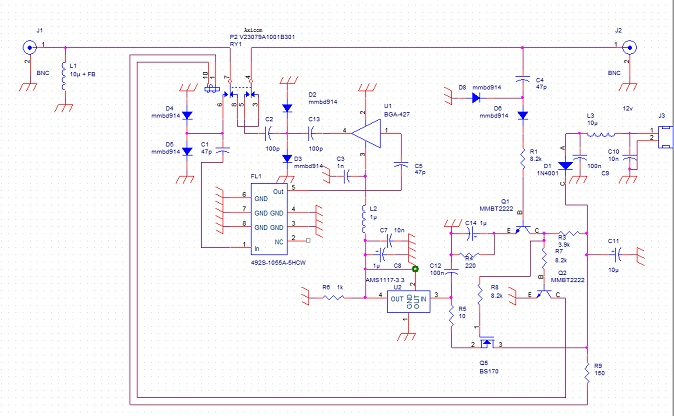
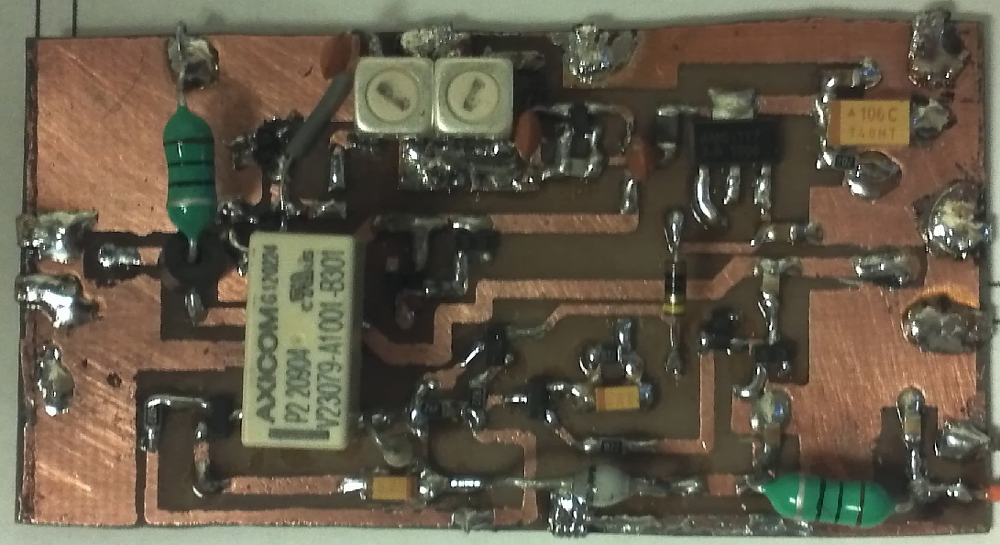
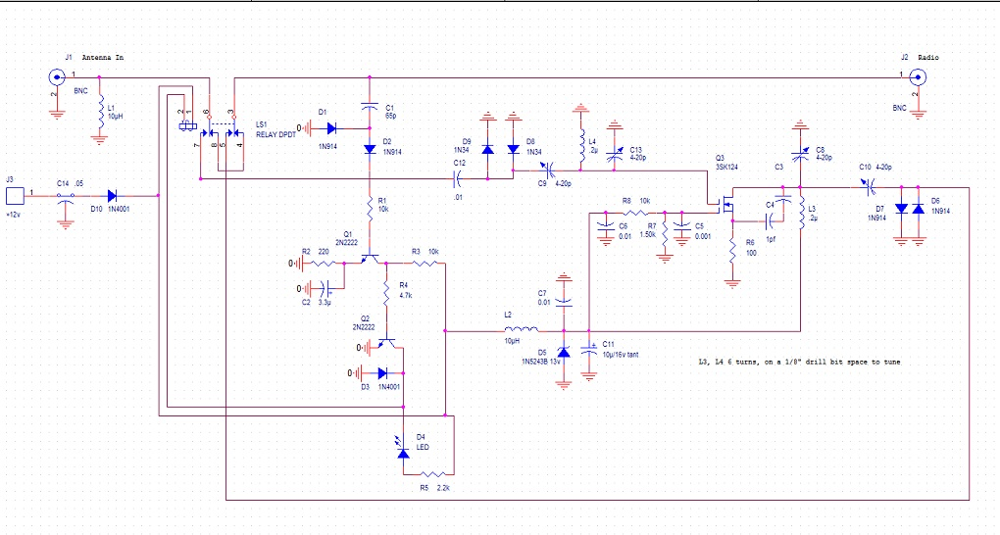
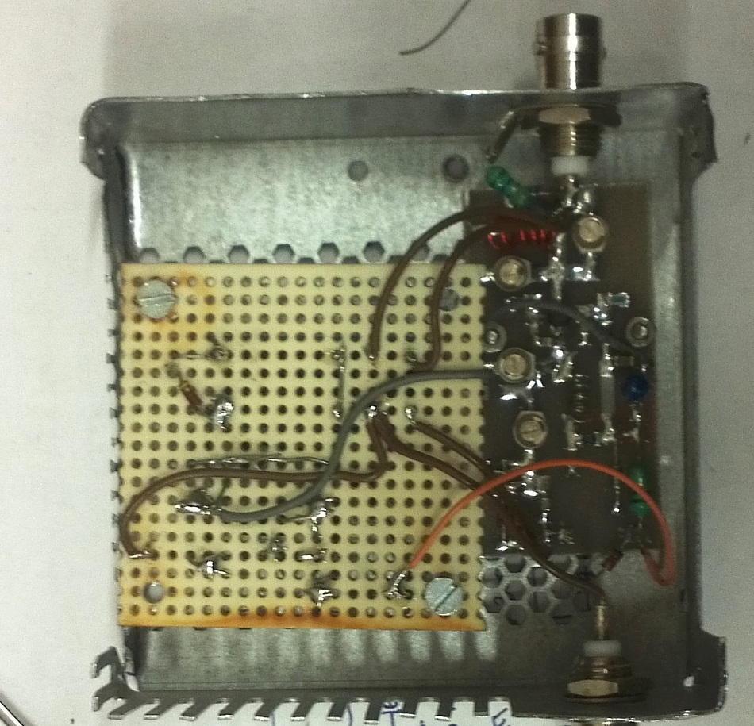

UHF Preamp
|  |
Here is a UHF preamp I designed and built (2014) for satellite work with a small (Arrow type) antenna. |
|  |
It uses an Infineon BGA427 (a 416 would also be a good choice) MMIC for gain and a helical filter, as well as RF sensing and switching that bypasses the amp at about 100 mW of impressed signal on the output connector. It has a measured gain of 19.8 dB at 435 MHz, and a noise figure of about 0.9 dB at the same frequency. Most of the parts are common discretes (Including the Toko helical filter) available from Digikey or many other suppliers, the MMIC can be ordered directly form Infineon, and the small relay can be obtained from Newark. |
Here is a pdf that contains the top side pattern - mirrored for direct impression on a copper clad board. The RF traces are .050 wide providing 50 ohm impedance on a 0.31 thick FR-4 double sided board. The top ground area and bottom groud plane should be connected in many places, I used lots of small pieces of solder wick around the edges. There are a few through holes needed to ground various things to the bottom plane, I also placed three through wires directly under the helical filter to improve its grounding and therefore filtering characteristics. |
|
VHF Preamp
|  |
Here is a VHF preamp I designed and built (2014) for satellite work with a small (Arrow type) antenna. |
|  |
It uses an old 3sk124 dual gate FET for gain and a passive filter, as well as RF sensing and switching that bypasses the amp at about 100 mW of impressed signal on the output connector. It has a measured gain of 9.8 dB at 144 MHz, and a noise figure of about 0.9 dB at the same frequency. Most of the parts are common discretes (Including the Toko helical filter) available from Digikey or many other suppliers and the small relay can be obtained from Newark. |
|